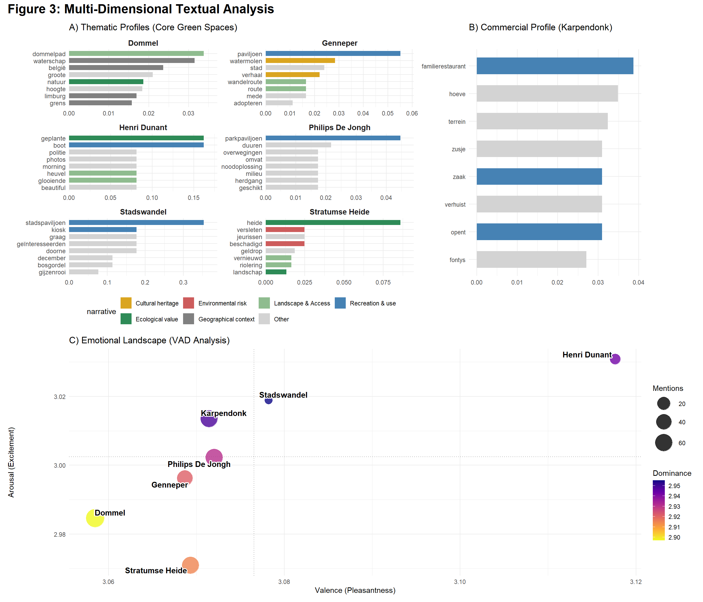
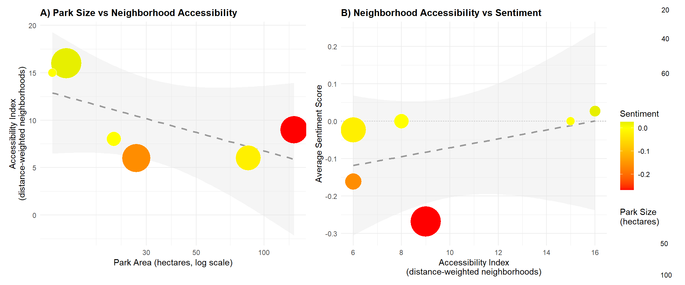

Background
A two-person project for a Data Analytics for Sustainability course. We wanted to find out what actually makes a park popular with Eindhoven residents: is it size, or something else? I led the sentiment and emotion analysis, the R pipeline, and the final report/website; Alexandra led the spatial-data side.

What I did
- Scraped Dutch news coverage (2024–2026, via LexisNexis) mentioning 7 Eindhoven parks and built an R sentiment-analysis pipeline, going beyond positive/negative into finer emotion dimensions (valence, arousal, dominance).
- Ran a geospatial analysis of each park's 600m walking catchment to quantify accessibility.
- Regressed sentiment against accessibility, park size and other variables to see what actually drives public opinion.
SMALLER + CLOSER > BIGGER
Park size and accessibility turned out to be negatively correlated (r≈-0.44): bigger parks tend to sit on the city edge, so they're often less reachable. Accessibility and media sentiment showed a moderate positive correlation (r≈0.45).

Result
How easy a park is to reach and how well it's maintained matters more than how big it is. That's a useful nudge for how cities allocate green-space budgets, and a reminder that the obvious metric (hectares) isn't always the one that predicts how much people actually love a place.
Methods & tools
R (NLP sentiment analysis, geospatial analysis) · Quarto for publishing